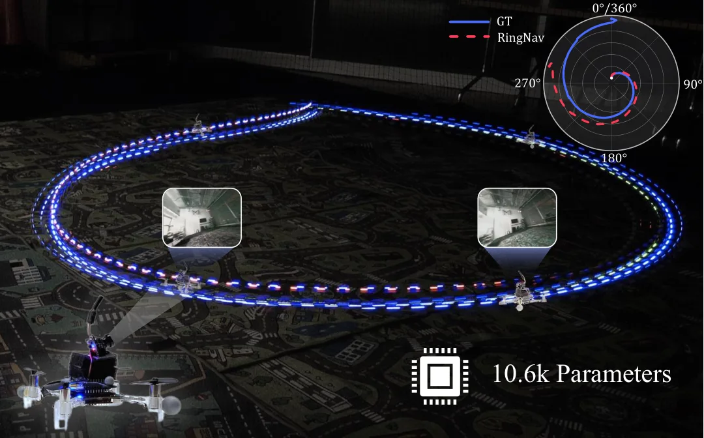
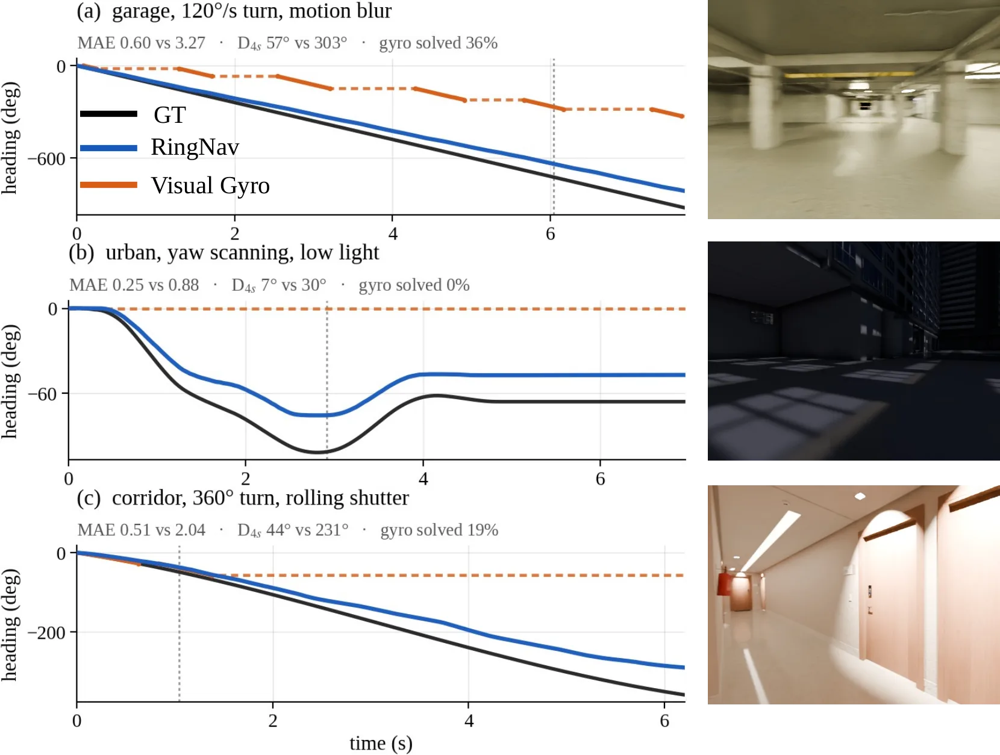
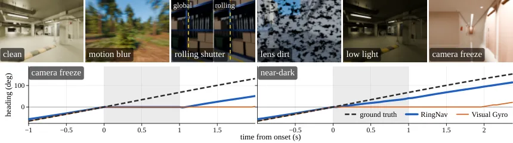
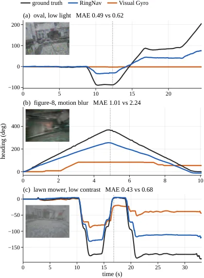

RingNav：把寻向记忆约束在圆周上的任务塑形视觉朝向估计
RingNav: Task-Shaped Circular Memory for Visual Heading
做法：编码器把两张 320×320 RGB 通道拼接后经四层步长 2 卷积（8/12/16/24 通道，BN+ReLU）+ 全局平均池化得到 z∈R²⁴，再过两层 MLP（宽度 32）得 f∈R³²，最后由 gated 标量头输出有序转角 q；对前后两个时序方向各评估一次，取其反对称分量作为转角，并在 S¹ 上复合朝向；训练用 104 条序列（80 条 TartanAir 13 个环境 + 24 条渲染轨迹）、8 条验证，50 epoch、AdamW、lr 3×10⁻⁴、weight decay 3×10⁻⁴。关键数字：CompTest 上 RingNav 转角 MAE 0.589°、4 秒累积 17.6°，DPVO 为 0.177°/4.2°、DROID-SLAM 0.198°、TartanVO 0.206°；相对同规模学习记忆模型 PairGRU（0.810°）降低 27%，其累积误差也低约 15%；消融：精确 S¹ 0.641°、skew-S¹ 0.607°、RingNav 0.589°、PairGRU 0.810°，且序列反转误差 E_rev 中 PairGRU 为 53.4 而 RingNav 为 0。真实迁移：干净航线 Visual Gyro 更准（0.325°/3.3° vs RingNav 0.379°/11.6°），但退化时 Visual Gyro 覆盖率掉到 4%（弱光），RingNav 对每对图像都给出估计（0.602°/41.9°）。
CompTest turn MAE
vs similar-size learned memory
edge throughput
reversal error
作者、单位与技术谱系 · Research context
作者与单位
研究脉络
- Visual Gyro（主要真机对照）方法上游（同领域对照）关系：论文把 Visual Gyro 作为真实无人机航线上的主要对照：干净航线上它更准，退化时覆盖率大幅下降，本文以「始终有输出」作为差异点。[官方 HTML 全文（第 IV-E 节、表 IV）]
- DPVO / DROID-SLAM / TartanVO（精度对照）方法上游（基准对照）关系：论文在 TartanAir CompTest 上报告这些成熟视觉里程计的转角误差作为参照，用于说明自身定位是「低算力 + 结构不变性」而非精度最优。[官方 HTML 全文（表 III）]
- 生物寻向的环状记忆（昆虫/头方向细胞）方法灵感来源关系：论文以昆虫头方向相关神经活动形成持久环状表征为动机，把 S¹ 上的环形记忆作为设计起点。[官方 HTML 全文（引言与第 III 节）]
合作网络
- 同一实验室共同署名University of Maryland, College Park → RingNav 五位作者关系：共同署名 / 同一单位[arXiv 官方 HTML（首页与参考文献）]
- 硬件平台与数据集依赖RingNav 训练/评测 → TartanAir、HDH-Bench、Crazyflie、Raspberry Pi Zero 2W、GAP8关系：官方数据集/硬件依赖[官方 HTML 全文（第 IV-A、IV-D 节、表 I）]
- 论文未给出公开代码库RingNav → 未发现公开代码地址关系：未发现公开合作边 / 代码待核验[arXiv 摘要页与官方 HTML]
作者与单位来自论文首页署名（论文报告的事实）；「上游/对照」定位来自正文表格与实验设置的明确表述（基于来源的解读）；同一单位的持续研究方向以首页与参考文献为据，未推断导师/师生关系；公开代码库未在论文中出现，已标为待核验。
方法本质拆解 · What actually changed
是不是微调？——从头训练的极小网络，且只在合成数据上训练
RingNav 不是微调某个大模型，而是从头训练一个 10.6k 参数的成对小网络：编码器四层步长 2 卷积（8/12/16/24 通道）+ 全局平均池化 → 24 维，两层 MLP → 32 维，再接 gated 标量头。训练用 104 条序列（80 条 TartanAir 轨迹，覆盖 13 个环境；24 条渲染轨迹，含公寓、车间、城市小巷与中庭），另用 8 条 TartanAir 轨迹做验证；优化器 AdamW，50 epoch，学习率 3×10⁻⁴，weight decay 3×10⁻⁴。真机实验使用**冻结**的 checkpoint 做零样本迁移，不用真实数据训练或做模型选择。
有没有额外约束？——记忆被约束在 S¹，转角被强制反对称
硬结构约束一：记忆状态活在圆周流形 S¹ 上，朝向直接在圆周上复合，而不是在无约束的向量空间里回归绝对角。硬结构约束二：转角由「同一网络在两个时序方向上的输出之差的一半」给出（反对称投影），因此在结构上满足 q(I_i,I_j) = −q(I_j,I_i)，这直接带来两条可验证性质——相同帧恰为零转角、序列反转精确抵消（消融中 E_rev = 0）。监督方面：既监督单步转角，也用多时间跨度（horizons）监督累积转角，并对有序预测额外施加约束。
推理/后端到底做了什么？——逐对图像前向 + 圆周复合，无全局优化
推理是纯前向的流式过程：对每对相邻 320×320 图像运行同一个小网络两次（正序与反序），取反对称分量得到转角，再在 S¹ 上累加得到朝向；不存在图优化、回环或全局批处理后端，这也是它能在 Pi Zero 2W（27.3 Hz）与 GAP8（33.4 Hz、0.49 MiB）上运行的原因。输入侧有预处理：合成图像直接缩放到 320×320；Crazyflie 图像以标定主点为中心裁 406×306 再缩放到 320×320。
方法本质是什么？——用任务的几何来塑形记忆，把不变性写进结构
本质是把「估计什么」与「状态活在哪里」绑定：因为任务是朝向，记忆就取圆形流形并用反对称增量更新，从而把两条不变性（同图零增量、反转抵消）从「希望网络学到」变成「结构上必然成立」。它改变的是状态表示与更新算子，而不是特征提取能力（网络被刻意做得很小）。明确没有做的是：没有估计平移、没有全局优化/回环后端、没有用真实数据训练或微调，也没有针对真实退化做数据增强。
输入/先验 = 相邻两帧 320×320 RGB（合成直接缩放；Crazyflie 先按主点裁 406×306 再缩放）+ 圆周先验 S¹；改变的位置 = 记忆状态空间（无约束隐状态 → 圆周流形）与增量算子（回归式 → 反对称投影）；约束或合并动作 = 双向时序评估取差半、朝向在 S¹ 上复合、单步与多跨度累积转角的监督；直接效果 = 10.6k 参数、CompTest 转角 MAE 0.589°（相对同规模 PairGRU 0.810° 降低 27%）、E_rev = 0，并可跑在 GAP8（33.4 Hz）与 Pi Zero 2W（27.3 Hz）上。

桥接价值Bridge
桥接价值
它把「任务结构 → 状态表示」这一判断落到一个极小的可验证系统上：因为任务是估计朝向，记忆就应当活在对朝向天然的流形 S¹ 上，而不是一个无约束的隐状态向量。这个取舍直接给出两个可测量的性质——相同图像给出恰好零转角、序列反转精确抵消——而这两条正是「结构性正确」相对「统计上更准」的区别。对可靠状态估计的启示是：与其在通用学习式记忆上堆参数，不如先问「状态本身的几何是什么」，再把更新约束到该几何上。
方法与模块Method
方法摘要
RingNav 是一个 10.6k 参数的成对图像转角估计器：输入相邻两张 320×320 图像，输出它们之间的转角，朝向在 S¹ 上逐步复合。核心是反对称投影——对同一网络分别评估 (I_t, I_{t+1}) 与 (I_{t+1}, I_t) 两个时序方向，取二者差的一半作为转角，从而在结构上强制 q(I_i,I_j) = −q(I_j,I_i)；这一步同时消除了「相同帧」的漂移并保证反转可抵消。网络本体是四层卷积（8/12/16/24 通道，步长 2，BN+ReLU）+ 全局平均池化 → 24 维 → 两层 MLP（32 维）→ gated 标量头，刻意保持极小以便上边缘设备。
可迁移模块
第一，把不变性写成结构而不是损失：反对称投影是对网络输出的一个确定性后处理，不依赖训练去「学会」反对称，因此这类不变性在数据分布外仍然成立（消融中精确 S¹ 与 skew-S¹ 的 E_rev 均为 0，而 PairGRU 为 53.4）。你的状态估计管线里凡有「反转/交换后应精确抵消」的性质（如增量式里程计的对偶、相对位姿的反对称性），都可用同法硬编码。第二，用流形复合代替回归：只学增量、在 S¹ 上复合，避免了对绝对角度的直接回归，这是低参数模型能保持精度的关键原因；同类思路可用于仅学「位姿增量」再在 SE(3) 上复合的轻量里程计。第三，按任务裁剪状态：论文的出发点是「系统维护了超出任务需要的状态」，这对你设计嵌入式状态量是有益的提醒。

证据Evidence
关键证据与数字
精度（来源：表 III）：CompTest 上 RingNav 转角 MAE 0.589°、4 秒累积 17.6°，DPVO 为 0.177°/4.2°、DROID-SLAM 0.198°、TartanVO 0.206°——在绝对精度上 RingNav 明显落后于 DPVO/DROID-SLAM，论文的 27%/15% 提升是相对「同规模学习式记忆模型 PairGRU（0.810°）」而言的（0.589/0.810 ≈ 0.727，即 −27%），这一点必须准确表述。结构性质（来源：消融）：精确 S¹ 0.641°、skew-S¹ 0.607°、RingNav 0.589°、PairGRU 0.810°；序列反转误差 E_rev：PairGRU 53.4，学得式 S¹ 3100+，而精确/skew S¹ 与 RingNav 均为 0。真机迁移（来源：表 IV，零样本、冻结 checkpoint、23 条干净 + 12 条退化 Crazyflie 航线、18,974 次图像对）：干净航线 Visual Gyro 0.325°/3.3° 优于 RingNav 0.379°/11.6°；退化时 Visual Gyro 覆盖率降到 4%（弱光）、78%（低对比）、79%（运动模糊），而 RingNav 对每对图像都返回估计（0.602°/41.9°，Visual Gyro 平均覆盖率 53.8%）。边缘部署（来源：表 I）：Pi Zero 2W 27.3 Hz、Pi 5 199 Hz、GAP8 33.4 Hz（0.49 MiB），对照 Visual Gyro 在 Pi 5 上为 3.50 Hz。
边界与下一步Limits & Next Step
边界与风险
最重要的边界是绝对精度：RingNav 在标准基准上并不优于成熟的视觉里程计（DPVO 0.177° vs 0.589°），因此不应把它当作精度提升型方法，而应视为「低资源 + 结构化不变性」的取舍；论文自身也只主张相对同规模学习记忆模型的改进。第二条边界是纯转角、无平移：它只估计朝向，不提供位移，因此不能替代完整 VO/SLAM；在长时间无回环场景下累积误差仍会增长（4 秒 17.6°，退化时 41.9°）。第三条是相机冻结/近全黑：论文报告相机冻结时累积误差约 40.76°，并明确指出 DPVO 在近暗区间仍明显更准——即在信息真正缺失时结构不变性无法补足证据。第四条是训练域：训练只用合成数据（104 条序列，无真实数据参与训练与模型选择），真机迁移为零样本；论文明确未使用模糊/闪烁/卷帘/低光等增强，因此退化条件下的表现属泛化而非拟合，但也意味着未针对真实退化优化。
下一步实验
建议实验一：把「反对称投影 + 流形复合」移植到你现有轻量里程计或 IMU/GNSS 姿态模块的朝向分量上，用「相同输入给出零增量」「序列反转后精确抵消」两条性质做单元级验收，再与现有回归式朝向头做 A/B。建议实验二：在资源受限平台上按论文口径复测吞吐（Pi Zero 2W / GAP8 类设备），把「频率 × 精度 × 内存」三者一起报告，避免只看精度。建议实验三：补一组「退化—覆盖率」对照（运动模糊、低光、低对比），因为论文最有说服力的工程点正是「退化时仍保证每帧有输出」；验证你的系统在同等退化下是否也具备这种连续性，并量化「有估计但更差」与「无估计」两种失败模式的代价。风险提示：不要把 RingNav 的 27% 误读为对 DPVO 的超越；本项在 CompTest 上显著落后 DPVO/DROID-SLAM，定位是低算力下的结构化替代方案。





